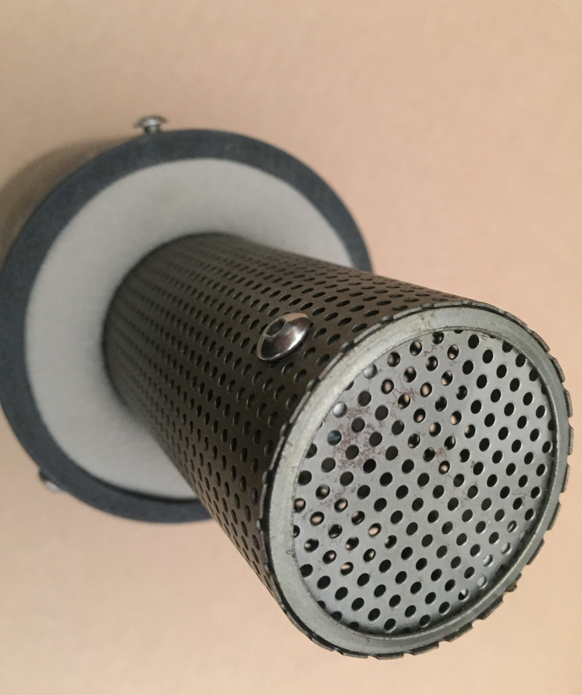
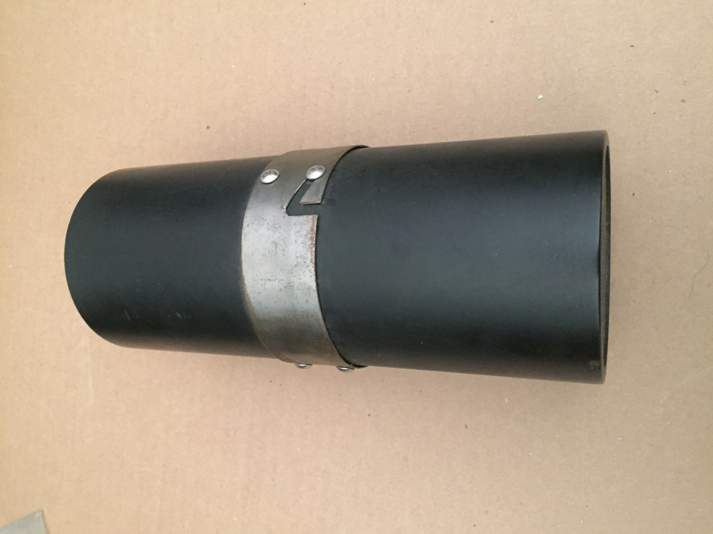
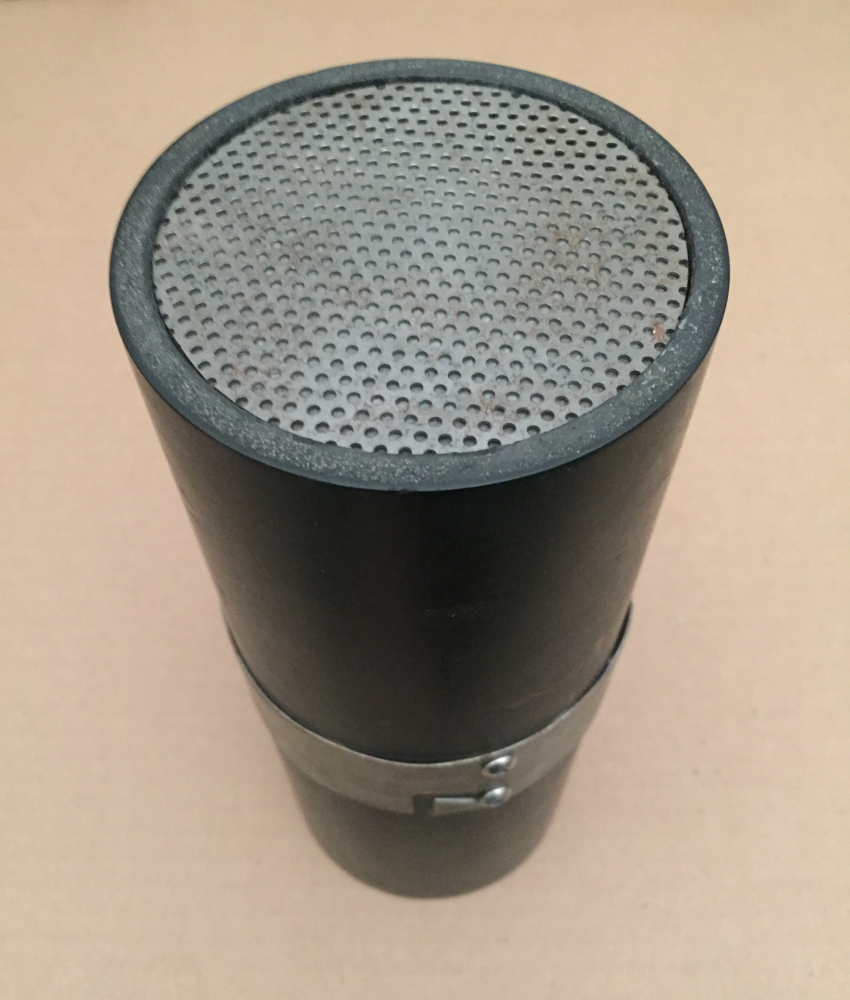
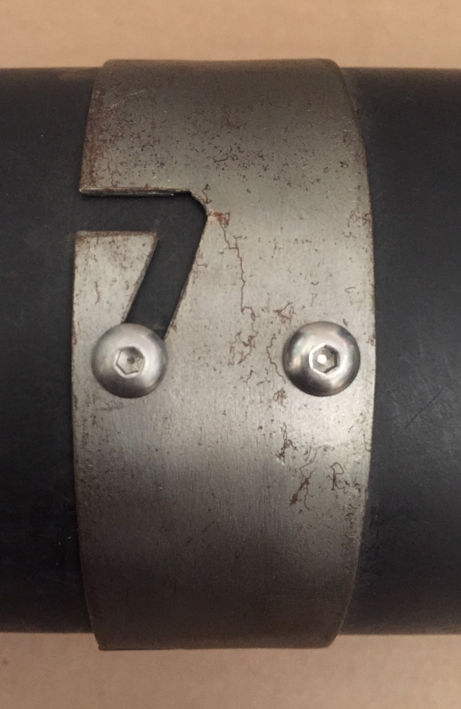
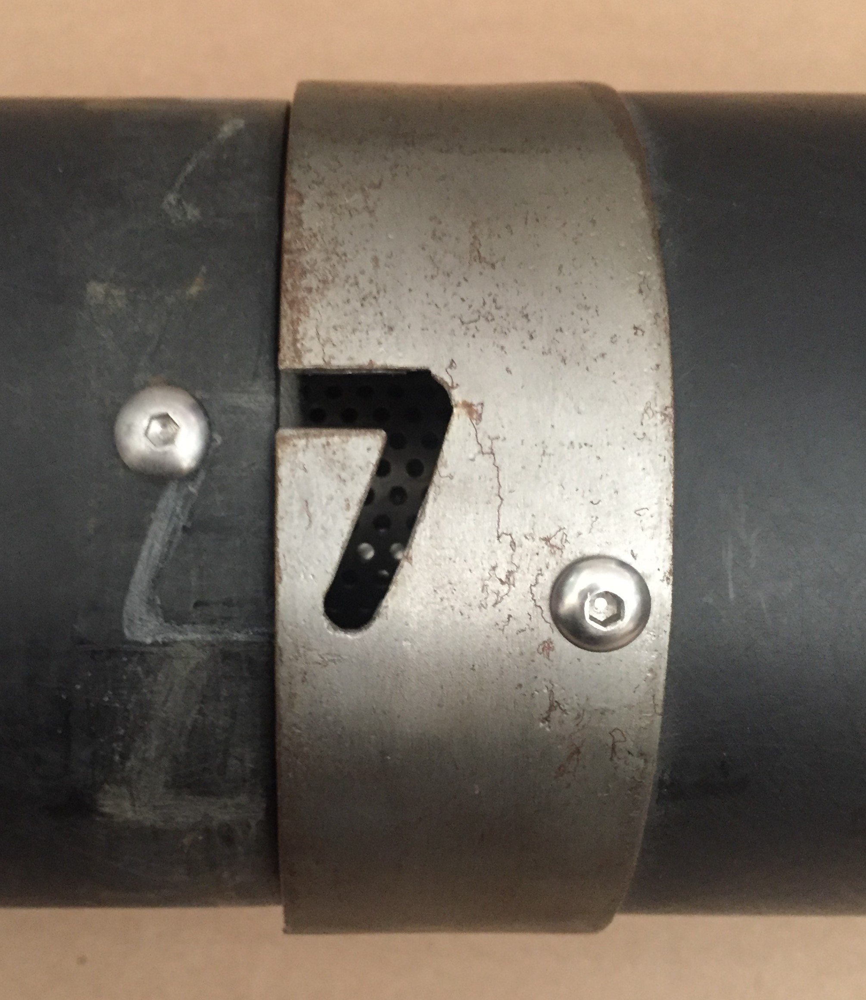
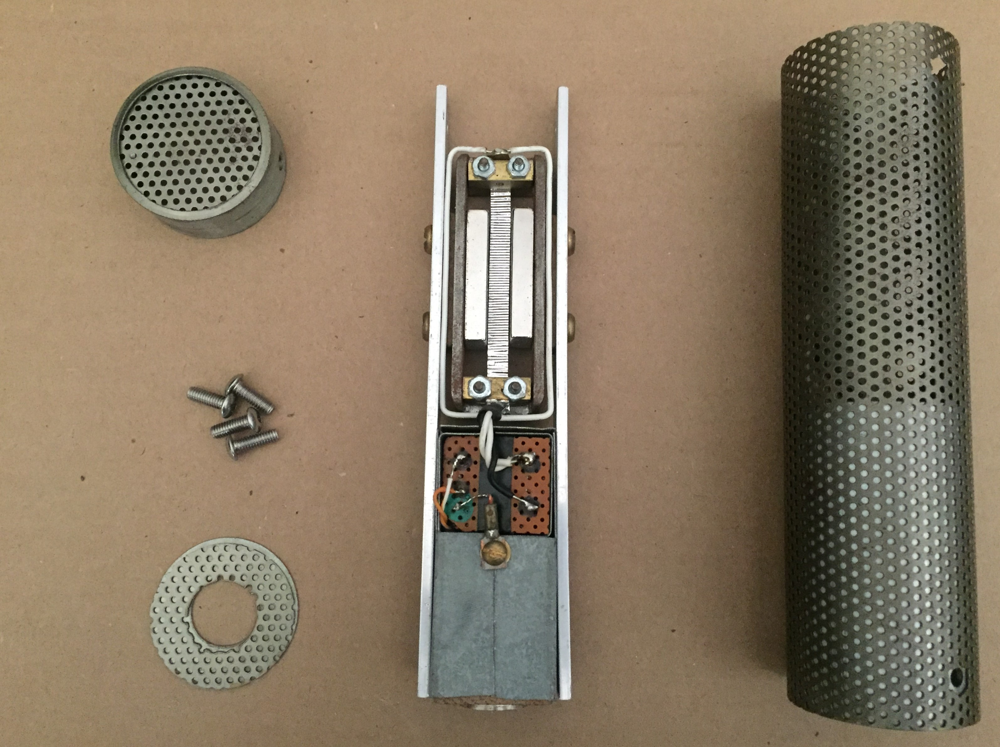
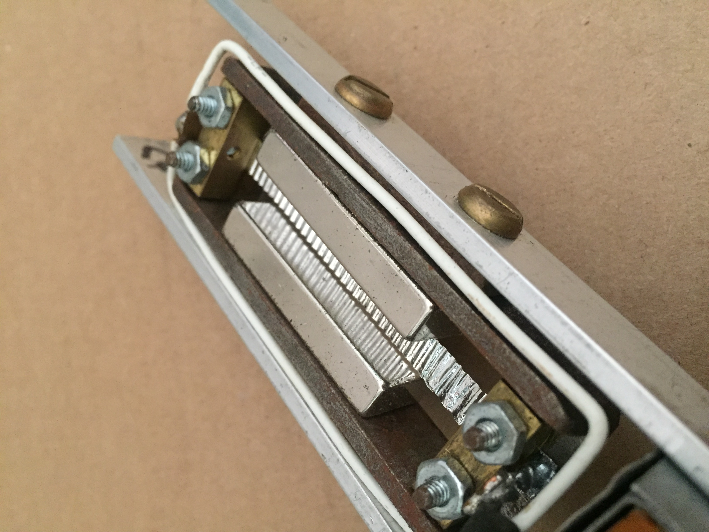
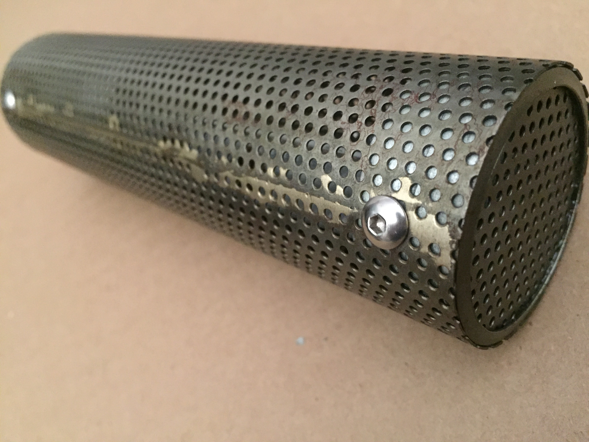

I'm actually kind of proud of this one. The output is just about as high as a Royer, the sound is clear (low end is pretty excessive though), noise is pretty low -- and I don't know for sure, but I think it actually looks nice. It's a little rusty now, so I'm glad I didn't sell these. If I were to do it again I'd plate it.
Here it is sitting in it's fancy case.
 Here's the case -- made from ABS and sheet metal with some foam and automotive headliner upholstery.
 Here's the funny latch I made. Pretty rusty -- seems I rubbed rubbed the galvanized sheet metal down to bare. It is supposed to look like a 7 and it does.
All the parts look pretty good. The only real sketchy part is the piece of perfboard I have the transformer mounted on. I didn't know how to make PCBs back then.
Closeup of the transducer. I spent a good amount of time thinking about the design for this one. The body is a half inch long piece of 1X3" rectangular tubing with a 0.12" wall thickness. The clamps are made from some short lengths of 0.25" square brass rod -- two of which are machined and epoxied into place, while the other two are removable for easy placement of the ribbon. The magnets are also epoxied in place. This whole assembly is bolted to the two 0.5X0.125" lengths of aluminum flat bar which serve to hold everything in place. I think I did a nice job on this one.
I silver-soldered the perforated metal exterior together. It ended up looking pretty seck.